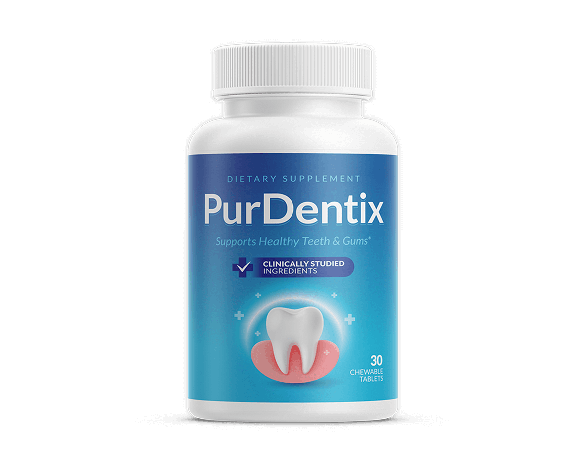
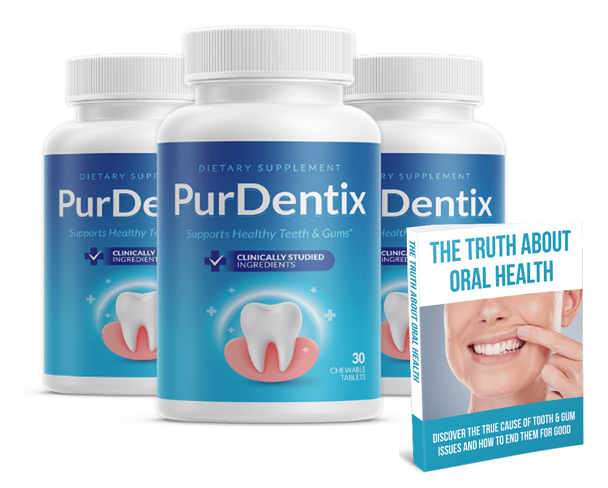
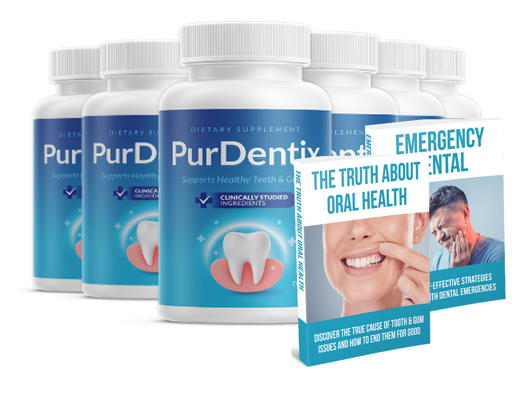
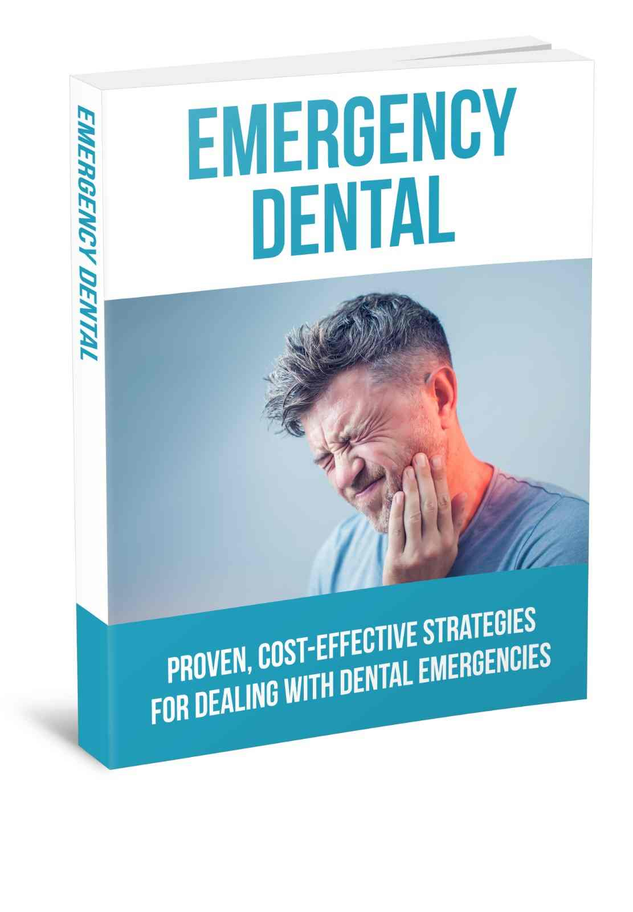
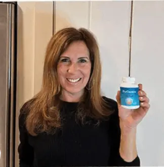
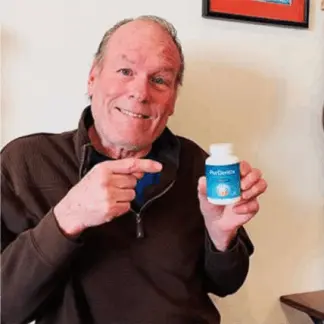
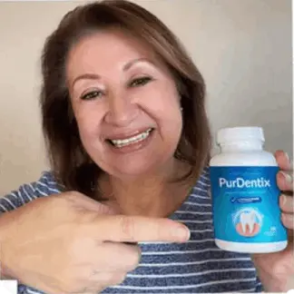

Chewable tablets · 30 per bottle · Adults 18+ · One a day · Contains milk
PurDentix: A Daily Chewable Tablet Marketed To Support The Oral Microbiome, Healthy Gums And Fresh Breath
PurDentix is a once-daily chewable tablet for adults who already brush and clean between their teeth and want one more small habit. You chew a fresh-tasting tablet, with no rinse to swish and no paste to apply. The seller presents it as nutritional support for a balanced mouth, healthy-looking gums and fresh breath, and the bottle says "Supports Healthy Teeth and Gums" and "Clinically Studied Ingredients". We read that more carefully: it does not treat or prevent cavities, gum disease or bad breath, no study of the tablet is shown, and it contains milk. Brushing with fluoride toothpaste, cleaning between teeth and seeing a dentist come first. This page explains the label, the dental red flags, the three bundle prices and the 60-day refund.*
- One chewable tablet a day, fresh taste
- A full Supplement Facts label to read line by line
- Free USA shipping on 3 and 6 bottles
- A 60-day money-back guarantee, subject to terms
- 1Brushtwice a day with fluoride toothpaste
- 2Cleanbetween your teeth daily
- 3Visityour dentist regularly
- 4Chewone tablet, if you choose it
| Milk allergy? | Do not use |
| Facial swelling or throbbing pain with fever? | See a dentist today |
| Bleeding gums that keep coming back? | See a dentist |
Secured payment • Encrypted checkout • 60-day guarantee
Related: Oral claims we skip · FAQ · The blog
*These statements have not been evaluated by the Food and Drug Administration. This product is not intended to diagnose, treat, cure or prevent any disease.

An animated teaching sketch, not data. Illustration.
At A Glance
What The PurDentix Seller Says About Quality
These are the seller's statements, reported as stated.

Made In The USA
The label adds "from foreign and domestic ingredients".

GMP Practice
Good Manufacturing Practice, per the brand.
FDA-Registered Facility
Not an FDA approval of the product.
- Peppermint flavour
Organic Peppermint Leaf
One of the label's other ingredients.
The seller's own page notes that facility registration is not FDA approval, and we agree. A supplied "100% natural organic" badge is not used, because the tablet contains sucralose and other base ingredients. See the quick answers and the oral claims we skip.
See your dentist first, then read the checkout.
60-day guarantee · Buying checklist · Bundle prices
What Is It
What Is PurDentix, As Shown On The Bottle And Page?
PurDentix comes in a white bottle with a blue label showing a tooth and the words "Supports Healthy Teeth and Gums", 30 chewable tablets to a bottle.*
The label shows 100 mg of chicory root inulin and a 40 mg blend of four probiotic strains (3.5 billion CFU at manufacture), plus peppermint and a tablet base, and says it contains milk.
It is a dietary supplement for adults: not a drug, not FDA approved and not a treatment for cavities, gum disease or bad breath.
Related: The label ingredients · Oral probiotics, the studies · Oral claims we skip
Read The Ingredients
Seller artwork, as supplied.
Pricing
PurDentix Prices: From $49 A Bottle
Three bundles, with free USA shipping on the larger two.
Starter
- 30 days at 1 tablet a day
- + $9.99 shipping
- 60-day guarantee, subject to terms
Popular
- 90 days at 1 tablet a day
- Free USA shipping
- 60-day guarantee, subject to terms
Best Value

- 180 days at 1 tablet a day
- Free USA shipping
- 60-day guarantee, subject to terms
Against $69 bottles, three bottles save $10 each and six save $20 each. The seller also shows "Regular price $99 per bottle", which nobody is shown paying, so we leave it out. The seller says the checkout page is the final source for price and terms. Bundle prices · Buying checklist · Shipping info
Sixty Days
PurDentix's 60-Day Money-Back Guarantee, Subject To Terms
The seller offers a 60-day money-back guarantee and says to check the current refund and return instructions with your order, including eligibility. It does not spell them out on its page, so confirm them before you buy.
Note the purchase date and set a reminder around day 45. A refund window is never a reason to delay a dentist visit. See the refund policy and the sixty-day refund steps.
Check A Bundle With A Guarantee The steps in detail →Extras
PurDentix Bonus Titles: Two Shown On The Packs, Reviewed
The 3 and 6 bottle pack images show two books; the seller's text does not mention them.

The other title, "The Truth About Oral Health", has a cover promising to "end" tooth and gum issues "for good", so no cover is shown. A real dental emergency needs a dentist. See the bonus titles reviewed and dental red flags.
Related: Shipping info · Refund policy · Pregnancy and teens
How It Works
How PurDentix Is Meant To Be Used: One Chewable Tablet A Day
The label says: as a dietary supplement, take 1 tablet daily, and do not exceed the recommended dose. The tablet is chewable, so it meets your mouth.*
- Brush twice a day with fluoride toothpaste.
- Clean between your teeth every day.
- See your dentist regularly, and for any red flag.
- Chew one tablet if you choose it, and check for milk allergy first.
- Decide inside the 60-day window.
Related: The daily routine · See your dentist first · Brushing and flossing basics
One tablet inside a full oral-care day. Illustration.
The seller's "how it works" story says the tablet supports a balanced oral microbiome. Whether it does is still unproven, so we do not present it as fact. The oral microbiome →
Ingredients
Inside PurDentix: Inulin, Four Probiotic Strains, Mint And A Milk Allergen
What each is and what to watch for. The label in detail →
The Label At A Glance
One lump amount for the blend, and an allergen.

| PurDentix Supplement Facts, as printed on the bottle label | Amount |
|---|---|
| Serving size | 1 tablet (chewable) |
| Servings per container | 30 |
| Inulin powder (Cichorium intybus, chicory root) | 100 mg |
| Proprietary probiotic blend | 40 mg, 3.5 billion CFU (at the time of manufacture) |
| Blend contains | Lactobacillus paracasei, Lactobacillus reuteri, Bifidobacterium lactis BL-04, Lactobacillus salivarius |
| Other ingredients | Microcrystalline cellulose, tricalcium phosphate, sucralose, organic peppermint leaf, magnesium stearate |
| Allergen | CONTAINS MILK |
| Daily Values | Not established for any line |
How to read it: the label gives one amount for the four-strain blend, 40 mg in all, with no split between strains. 3.5 billion CFU is the count at manufacture, and live counts fall with time and warmth. Only one strain, BL-04, has a strain name.
Directions (label): as a dietary supplement, take 1 tablet daily. Do not exceed the recommended dose. Store in a cool, dry place below 30 C (86 F). Keep out of reach of children. Not for those under 18 or pregnant or nursing mothers, and consult a physician first, especially with a medication or medical condition.
General evidence. Illustration.
A fair summary: brushing with fluoride, cleaning between teeth and dentist visits have the strongest evidence, some oral probiotic strains show small effects on plaque and gums, only one strain here is named, and no trial of this tablet is shown.* See the blog on L. reuteri, paracasei and salivarius, BL-04 and inulin.
Milk allergy, or a weak immune system? Ask first.
Honest information first · Milk allergy · Probiotics and immunity
Safety
PurDentix Safety: Dental Red Flags, Milk, Probiotics And Medicines
Six reasons to ask first.
Dental Red Flags First
Facial swelling, throbbing pain with fever, loose teeth, gums that bleed or swell often and mouth sores that last over two weeks need a dentist, not a supplement. The tablet also contains milk and live probiotics. See dental red flags and probiotics and weak immunity.
Illustration.
Illustration.
A Tablet Is Not Dental Care
Cavities and gum disease have proven treatments. See see your dentist first.
| If you | Then |
|---|---|
| Have facial swelling, or throbbing pain with fever | Seek urgent care. See dental red flags. |
| Are allergic to milk | Do not use. See milk allergy. |
| Have a weak immune system, a central line or serious illness | Ask first. See probiotics and weak immunity. |
| Have bleeding or swollen gums | See a dentist. See gum bleeding and gum disease. |
| Are pregnant, nursing, under 18 or on medicines | Do not start without a doctor. See pregnancy, teens, conditions. |
| Have trouble swallowing or breathing | Seek emergency care at once. |
See A Dentist Soon For
Throbbing tooth pain, gums pulling away, loose teeth, bad breath that does not clear, or a sore, patch or lump lasting over two weeks.
Keep It Away From Children
A flavoured chewable can look like candy. Store the bottle cool, dry and out of reach.
Illustration.
Benefits
What PurDentix Aims To Support, And Where It Stops
Goals, never promises. The support goals →
A trial window
A 60-day money-back guarantee.
Illustrative emphasis, not measured.
The Basics Carry The Weight
Brushing, cleaning between teeth and dentist visits do far more than any tablet. See what PurDentix aims to support and gum disease, signs and treatment.
Choose Your Bundle
Comparing PurDentix Bundles By Cost Per Day
The lowest per-bottle price, $49, is on the six bottle bundle.
Starter
- 30 days at 1 tablet a day
- + $9.99 shipping
- 60-day guarantee, subject to terms
Popular
- 90 days at 1 tablet a day
- Free USA shipping
- 60-day guarantee, subject to terms
Best Value
- 180 days at 1 tablet a day
- Free USA shipping
- 60-day guarantee, subject to terms
Cost per day. Illustration.
The Sums
One bottle is $69 plus $9.99 shipping ($78.99), three are $177 and six are $294, with free USA shipping on the last two. At one tablet a day that is about $2.63, $1.97 and $1.63 a day. See bundle prices.
Start Small If Unsure
If you are unsure about the milk allergen or probiotics for your health, the single bottle is the careful start. See the buying checklist and the refund steps.
Sixty days. Illustration.
Customer Reviews
PurDentix Customer Reviews: Questions And Honest Answers
Individual buyers cannot be verified, so no star ratings, counts or named testimonials appear here. The seller's page prints three mild "customer experiences" with names and states, and we do not repeat them. Three supplied photos show people holding a bottle; we cannot verify who they are or that they bought it, so they appear only as small captioned images. Verified reviews will be added when they can be shown in full, critical ones included.

Seller-supplied photo; we cannot verify the person.
Can I take it with a milk allergy?
No. The label says CONTAINS MILK. Ask your doctor or allergist if you are unsure, and seek emergency care for hives, swelling or trouble breathing.

Seller-supplied photo; we cannot verify the person.
Will it fix bad breath or bleeding gums?
Not on the evidence. Most bad breath and gum bleeding come from plaque, and brushing, cleaning between teeth and a dentist fix them. Bleeding that persists needs a dentist.

Seller-supplied photo; we cannot verify the person.
Is it safe for me as a probiotic?
Generally fine for healthy adults, but ask first with weakened immunity, a central line, serious illness or immune-suppressing medicine.
Send yours
Used PurDentix? Email contact@purdentix.com with your order number and an honest account, kind or critical. Verified reviews can appear here.
Common questions
Milk, gums, breath and refunds. See the quick answers.
Solid facts
The label, the prices and the refund steps are spelled out here and in the blog.
Questions
PurDentix Questions, Answered Carefully
What is PurDentix?
A once-daily chewable tablet with chicory inulin and a four-strain probiotic blend, marketed to support the oral microbiome, gum wellness and fresh breath.
What does the label list?
Inulin 100 mg and a 40 mg proprietary probiotic blend (3.5 billion CFU at manufacture) of L. paracasei, L. reuteri, B. lactis BL-04 and L. salivarius, plus peppermint and a tablet base.
Does it contain milk?
Yes. The label says CONTAINS MILK, so it is not for anyone with a milk allergy.
How do I take it?
One tablet daily, per the label, chewed.
Does it treat cavities, gum disease or bad breath?
No. It does not treat or prevent cavities, gum disease or persistent bad breath.
Can it replace brushing or flossing?
No. The seller itself says it complements, not replaces, brushing, cleaning between teeth and dental visits.
Is it FDA approved?
No. Supplements are not. The seller only says it is made in an FDA-registered facility.
Who should ask a doctor first?
Anyone with a weak immune system, a central line or serious illness, on medicines, pregnant, nursing, or under 18.
What does it cost?
$69 plus $9.99 shipping for 1 bottle, $59 a bottle ($177) for 3, $49 a bottle ($294) for 6, with free USA shipping on 3 and 6.
Is it a subscription?
The seller says to check the checkout summary for any recurring terms; confirm before you pay.
What is the guarantee?
A 60-day money-back guarantee, subject to the seller's terms.
When should I see a dentist?
Straight away for facial swelling, throbbing pain with fever, or loose teeth, and soon for bleeding or swollen gums or a sore that lasts over two weeks.
From The Blog
The PurDentix Notebook: Ten Linked Entries
The oral microbiome, each strain, bad breath, gums and the basics.
How The Oral Microbiome Works
A community.
EvidenceOral Probiotics: What Studies Show
Small, strain-specific.
IngredientsLactobacillus Reuteri And Gums
The best-studied.
IngredientsL. Paracasei And L. Salivarius
Mixed results.
IngredientsBifidobacterium Lactis BL-04
The named strain.
IngredientsChicory Inulin: The Evidence
A prebiotic.
HealthBad Breath: Causes And Care
Clean first.
HealthGum Disease: Signs And Treatment
See a dentist.
BasicsBrushing, Flossing And Fluoride
What works.
ClaimsHow To Judge Oral Supplement Claims
Four questions.
Ready When You Are
Start With Your Dentist, Then Choose PurDentix
One chewable tablet a day, a full bottle label to read and a 60-day money-back guarantee, from $49 a bottle on the six bottle bundle. Order once you have seen your dentist, checked for a milk allergy and compared the label with your own health and medicines. See the buying checklist and bundle prices.
- Contains milk
- Brushing and flossing come first
- No trial of the tablet is shown
- No promise of results
The Label
The PurDentix Label Details, As Printed On The Bottle
Inulin, the probiotic blend and an allergen. The ingredients →
| PurDentix Supplement Facts, as printed on the bottle label | Amount |
|---|---|
| Serving size | 1 tablet (chewable) |
| Servings per container | 30 |
| Inulin powder (Cichorium intybus, chicory root) | 100 mg |
| Proprietary probiotic blend | 40 mg, 3.5 billion CFU (at the time of manufacture) |
| Blend contains | Lactobacillus paracasei, Lactobacillus reuteri, Bifidobacterium lactis BL-04, Lactobacillus salivarius |
| Other ingredients | Microcrystalline cellulose, tricalcium phosphate, sucralose, organic peppermint leaf, magnesium stearate |
| Allergen | CONTAINS MILK |
| Daily Values | Not established for any line |
How to read it: the label gives one amount for the four-strain blend, 40 mg in all, with no split between strains. 3.5 billion CFU is the count at manufacture, and live counts fall with time and warmth. Only one strain, BL-04, has a strain name.
Directions (label): as a dietary supplement, take 1 tablet daily. Do not exceed the recommended dose. Store in a cool, dry place below 30 C (86 F). Keep out of reach of children. Not for those under 18 or pregnant or nursing mothers, and consult a physician first, especially with a medication or medical condition.
A dietary supplement cannot be FDA approved. Read the directions and warnings on your own bottle, and see the health disclaimer.
References
Independent Reading For PurDentix Shoppers
None of them tested PurDentix itself. Our blog digs into each part →
These organizations do not endorse, sponsor or have any affiliation with PurDentix or this website. See also the health disclaimer.